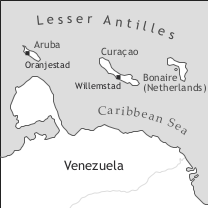

by Philippe Maurer

Papiamentu is spoken in the islands of Aruba, Bonaire (Boneiru in Papiamentu), and Curaçao (Kòrsou in Papiamentu) (ABC islands), which formerly were part of the Netherlands Antilles together with the English (or English Creole) speaking islands of Sint Maarten, Sint Eustatius, and Saba. In 2007, Papiamentu was declared an official language of the Netherlands Antilles.
Since 1996, Aruba has formed an independent entity linked directly to the Netherlands. In October 2010, the Netherlands Antilles were dissolved and since then, Curaçao and Aruba have been independent countries within the Kingdom of the Netherlands, which comprises the Netherlands, Aruba, Curaçao, and Sint Maarten. Bonaire, Sint Eustatius, and Saba form three special municipalities within the Caribbean Netherlands.
Curaçao is the largest of the ABC islands, with 142,000 inhabitants (2010 census). Aruba has 103,000 inhabitants (2009 estimate), and Bonaire 15,800 (2010 census).
The variety described in this article is urban Curaçaoan Papiamentu.
The ABC islands were occupied by the Spanish in 1499. To them, they were useless islands (islas inútiles) because there were no precious metals found on the islands. In 1515, the native population of the three islands was deported to Hispaniola (Dominican Republic and Haiti today), and later on the ABC islands were repopulated with some of the deported Amerindians as well as with some Amerindians from Venezuela.
The Dutch seized the ABC islands in 1634 (Curaçao) and 1636 (Aruba and Bonaire). The Spanish left for Venezuela with most of the Amerindians; some Amerindians came back later, especially to Aruba and Bonaire, where they constituted the majority (or at least an important part) of the island’s population until the end of the 18th century.
Initially, the importance of Curaçao was only strategic in the fight of the Dutch against the Spanish, but from 1648 onwards, Curaçao became an important depot for African slaves which were predominantly sold to the nearby Spanish colonies. In the beginning, the slave trade was illegal, but in 1662 the Dutch West Indian Company (WIC) was given an asiento2 in Curaçao, which allowed and required the Dutch to legally sell slaves to the neighbouring Spanish colonies.
An important factor in the social history of the ABC islands, and especially of Curaçao, is the presence of Sephardic Jews who mostly came from Amsterdam. Many Sephardim who resided in Amsterdam had been farmers in Dutch Brazil, which the Dutch lost in 1654. The Dutch wanted to profit from their farming experience and offered them the privilege of acquiring slaves, a major exception at that time because until 1675 only the Dutch WIC had the right to own slaves. Note, however, that the Sephardim never possessed more than 25% of Curaçao’s slave population.
The first 12 Sephardic families arrived in Curaçao in 1659, approximately ten years after the first consignment of African slaves was imported, and soon constituted an important part of the European population of Curaçao. Although the official language of the Jewish congregation was Portuguese, it appears that many of them also spoke Spanish.
Papiamentu originated in Curaçao in the second half of the 17th century in a society where the following languages or language families were most probably present: Dutch (and other northern European languages), European Portuguese and Spanish (spoken by the Sephardic Jews), Gbe, Bantu languages from the Congo-Angola area, Afro-Portuguese, and maybe also Pidgin Portuguese (spoken by soldiers and seamen at the fort).
There are no clear figures regarding the composition of the Curaçaoan society in the 17th century, especially during the period of the first Dutch WIC (dissolved in 1674), because most of the documents related to this company were lost. The documents of the second Dutch West Indian Company, from 1675 onwards, are much better conserved.
It seems that after the Spanish had left Curaçao in 1634, only about 75 Amerindians remained on the island, which means that they were not important numerically. Under Dutch rule, the Amerindians on the three islands had the same status as the Europeans and could not be enslaved.
The first census was only carried out in 1789 (see Table 1 below), i.e. roughly 150 years after the beginning of the Dutch rule, but the following data are available (Maurer 1998: 190-191, Hartog 1961: 196, 199, 455, Goslinga 1979: 105):
1634 421 Europeans (mostly soldiers and seamen), 75 Amerindians
1635 412 Europeans (mostly soldiers and seamen), 50 Amerindians
1639 8-9 African slaves
1650 150 African slaves
1659 12 Sephardic families
1697 2,400 African slaves who belonged to the Dutch West Indian Company
~ 1700 2,400 Europeans and 3,600 slaves
The last figure shows that by 1700, the African slaves had outnumbered the Europeans.
According to Buddingh (1994, cited after Jacobs 2009: 357), between 1667 and 1674 the average number of slaves imported to Curaçao was 3,000 per year; Postma (1990: 45) claims that the number of slaves imported to Curaçao from 1674 to 1713 fluctuated between 200 and 4,400 per year. Most slaves were sold to the Spanish colonies. In 1713, Spain withdrew the asiento from Curaçao, and the slave trade diminished considerably, with 500 – 600 slaves imported annually. The last slave ship arrived in Curaçao in 1778 (Hartog 1961: 446).
It is difficult to establish the origin of the slaves, especially during the first Dutch WIC. However, Jacobs (2009: 352 et passim) shows that up to 1677, several ships brought slaves from the Senegambian region to Curaçao. According to Postma (1990), under the second Dutch WIC about one third of the slaves came from the Congo-Angola area, and two thirds from the Togo-Benin region.
The Sephardim constituted 30% - 50% of the white population in the 18th and at the beginning of the 19th century. In 1713, there were 320 Dutch (and other Northern European) families as well as 140 Jewish families; in 1750 there were approximately 1,500 Jews in Curaçao, and in 1785 there were 1,200 (Emmanuel & Emmanuel 1970: 109, 302).
The first census carried out in 1789 (Tabe 1) shows an important difference between the rural and the urban population of the island: In the rural areas of Curaçao, the number of Dutch and Sephardim was very low, whereas the overwhelming majority of the population was made up of African slaves.
|
Table 1. Curaçao census of 1789 |
||||
|
Willemstad |
rural areas |
total |
||
|
total population |
11,398 58.3% |
8,147 41.7% |
19,544 100% |
|
|
Europeans |
total |
3,424 30% |
541 7% |
3,964 20% |
|
Dutch |
2,001 17.5% |
469 5.5% |
2,470 12.5% |
|
|
Sephardim |
1,423 12.5% |
72 1.5% |
1,495 7.5% |
|
|
Africans |
total |
7,974 70% |
7,606 93% |
15,580 80% |
|
slaves |
5,359 47% |
7,445 91% |
12,804 66% |
|
|
freed slaves |
2,615 23% |
161 2% |
2,776 14% |
|
In Aruba, there were very few Europeans until the end of the 18th century, the island being populated mainly by Amerindians who had returned from Venezuela. It is only at the end of the 18th century that Dutch people, together with their slaves, started to emigrate from Curaçao to Aruba; this is the time when Papiamentu was supposedly brought to Aruba.
The first Aruban census dates from 1804, but the population category was only indicated for the head of the families. Out of the 256 heads of the families, 23.2% were Europeans, 55.1% Amerindians, 18.7% of mixed ancestry, and 2% Africans. The 1806 census shows that the totality of the population went up to 1,546 people, of whom 1,352 (87.5%) were free and 194 (12.5%) enslaved.
Papiamentu was probably brought to Bonaire at the end of the 17th century by African slaves who were exported from Curaçao to this island in order to work in the salt-pans. In 1697, there were 97 African slaves on the island. The first census, carried out in 1808, indicates that out of a total population of 945, 7.6% were Europeans, 30.1% Amerindians, 23.8% free people of mixed ancestry, and 38.5% African slaves (9.7% domestic slaves and 28.8% slaves belonging to the Dutch West Indian Company).
The origin of Papiamentu is a highly controversial issue. Since Papiamentu is clearly an Ibero-Romance-based creole with an important Dutch adstrate, and not a Dutch-based creole like e.g. Negerhollands or Berbice Dutch (see van Sluys (2012), Negerhollands, and Kouwenberg (2012), Berbice Dutch, both in vol. I), the main issue is to identify Papiamentu’s Ibero-Romance origin. Various hypotheses have been proposed, the main issue being whether the Ibero-Romance part is of European or African origin.
Some linguists thought that the Ibero-Romance character of Papiamentu was due to the Amerindians who worked for the Dutch garrison in Willemstad and who spoke Spanish (Hartog 1961: 93-95), but most of them lived in villages away from the fort and did not have much contact with the Dutch.
Another hypothesis claims that a Portuguese-based pidgin or creole was brought to Curaçao by the Sephardim coming from Dutch Brazil with their slaves, but this hypothesis has to be rejected because the Sephardim (as well as the other Dutch) had to leave their belongings, including their slaves, when they left Brazil in 1654; furthermore, they could not have come to Curaçao directly from Brazil since they arrived in Curaçao five years after they had to leave Brazil.
Regarding the Afro-Portuguese origin of Papiamentu, the main issue is whether this origin is due to the influence of Upper Guinea Creole (UGC, i.e. Cape Verdean Creole, Guinea Bissau Kriyol, Casamancese Creole) or of Gulf of Guinea Creole (GGC, i.e. Santome, Principense, Fa d’Ambô, Angolar), or both.
The difficulty is that in many cases it is impossible to determine from which (Afro-)Ibero-Romance source a given Papiamentu word is derived, because several different sources are often possible. For example, the Papiamentu verb paga ‘pay, switch off’ could be derived from Portuguese and Spanish pagar ‘pay’ and apagar ‘switch off’, or from Cape Verdean, Guinea Bissau Kriyol, Santome, Angolar, or Principense paga, which means both ‘pay’ and ‘switch off’, as in Papiamentu.
But in some cases, a clearly Afro-Portuguese etymology, either UGC or GGC, can be established. For example, Papiamentu banda di ‘next to (locative), around (temporal)’ matches exactely UGC banda di (Jacobs 2009: 337), or Papiamentu promé ‘first’/promé (ku) ‘before’ is paralleled by Cape Verdean purmeru/purmeru (ki) (Jacobs 2009: 342). There are no GGC equivalents for these two items. Conversely, Papiamentu landa ‘to swim’ corresponds to GGC landa; there are no such forms in the UGC, where forms like nada are used. Another case of clearly GGC origin is the Papiamentu third person plural pronoun nan, which is paralleled by Santome inen, 19th century Principense ina, Angolar ane ~ ene, and Fa d’Ambô nan and its variants. All these forms are ultimately derived from Edo iɽ̃ã.3
Up to now no direct evidence has been found that the WIC imported slaves to Curaçao directly from the Cape Verdean Islands (Jacobs 2009: 357). The same holds true for the Gulf of Guinea islands, in spite of the fact that the Dutch occupied these islands between 1640 and 1648. Nevertheless, Quint (2000) and Jacobs (2009) claim that Papiamentu belongs to the Upper Guinea Creoles group (see also Biagui & Quint (2012) on Casamancese Creole, this volume). The scenario proposed by Jacobs (2009: 351) is that slaves who natively spoke a fullfledged UGC were imported to Curaçao during the first WIC period (which lasted until 1674). This then formed the base of Papiamentu, and the GGC elements (as well as other elements) were introduced into Papiamentu later on. His main linguistic argument is that Papiamentu and the UGC varieties share not only words, but also grammatical (sub-)systems (Jacobs 2009: 350), e.g. the substystem of personal pronouns. This point is questionable, because in my opinion there are as many system parallels between Papiamentu and the UGC as between Papiamentu and the GGC. A comparison of Papiamentu’s subject personal pronouns with the corresponding forms in UGC and GGC is presented in Table 2.
|
Table 2. Subject pronouns in Papiamentu, GGC, and UGC |
||||
|
(GGC) |
Cape Verdean (Santiago) (UGC) |
(UGC) |
||
|
1sg |
mi |
N |
N |
N |
|
2sg |
bo |
bô |
bu |
bu |
|
3sg |
e ~ el |
ê |
e ~ el |
i |
|
1pl |
nos |
non |
nu |
no |
|
2pl |
boso ~ bos(o)nan |
inensê |
nhos |
bo |
|
3pl |
nan |
inen |
es |
e |
Table 2 shows that for 1sg, the same form is used in GGC and UGC (upper case in N refers to the fact that the realization of this form (n or m) depends on whether or not the onset of the following verb or TAM marker is homorganic). The Papiamentu form is slightly different. 2sg, 3sg, and 1pl are almost identic in all the languages, whereas Papiamentu 2pl does not correspond to any form of the other varieties; and finally 3pl corresponds exclusively to GGC, represented here by Santome. To sum up, there is as much evicence for structural similarity between Papiamentu and the UGC as between Papiamentu and the GGC in this particular case.
Regarding the TAM system, Papiamentu is characterized, among other features, by the presence of the future marker lo (preceding the singular subject pronouns and the negator no; see example (29) below), whose position reflects the adverbial nature logo ‘immediately, right away’ in Portuguese, and contrasts with the other TAM markers, which are located between the negator no and the verb. This adverbial, hence lexical, property of Papiamentu lo constitutes a pidgin feature, since pidgins are thought to consist only of lexical morphemes but not of grammatical morphemes. The UGC and the GGC do not possess a future marker; instead, the markers ta (UGC) and ka (GGC) denote habitual present, future, and present of some stative verbs. According to Jacobs’s hypothesis, lo should have been introduced into Papiamentu after a natively spoken UGC variety had been brought to Curaçao. In my view, this is not very probable; a pidgin feature is more likely to have been retained in a very early stage of a creole language’s history and not after a creole language has stabilized, which should be the case if a fullfledged UGC creole was brought to Curaçao.
In view of what has been said, I currently prefer the hypothesis that Papiamentu evolved in a contact situation in which Afro-Portuguese creoles (both UGC and GGC) spoken by African slaves, Pidgin Portuguese spoken by soldiers and seamen, and Portuguese and Spanish spoken by Sephardic Jews all contributed to the formation of a new language in the 17th century, with subsequent changes due to language contact, though early, with Spanish and Dutch. 4
Most native speakers of Papiamentu are at least bilingual and speak also the official language Dutch, although to varying degrees of proficiency. Many also have a good command of Spanish and English, which means that currently Papiamentu is in contact with – and therefore influenced by – the three languages Dutch, English, and Spanish.
There is some variation between the Papiamentu spoken on the three islands. Most differences are lexical, but Aruban Papiamentu has final -o in most cases where Bonaire and Curaçao have -u, as in sinko vs. sinku ‘five’. There also is (or has been) some variation within the Papiamentu spoken on a particular island (especially rural Curaçaoan Papiamentu vs. urban Curaçaoan Papiamentu), but this still needs to be thoroughly investigated. A special Curaçaoan lect is used by Sephardic Jews (see e.g. Henriquez 1988). The differences between Sephardic and common Papiamentu are mainly lexical.
Nowadays, Papiamentu enjoys high prestige. It is used in newspapers, in television and radio broadcasting, in political and other relevant social meetings, and, of course, as the main means of spoken communication of Papiamentu speakers. In school, it is taught as a subject but is not (yet) used as a language of teaching, except for some private schools in Curaçao.
Several attemps have been made to standardize the language, and two spelling systems have been implemented. The spelling system for Curaçao and Bonaire, phonologically based, was elaborated in 1976 by a commission appointed by the Island Council of Curaçao, and made offcial in 2008 by the government of the Netherlands Antilles. The Aruban spelling system, etymologically based, was also elaborated in 1976 by a commission appointed by the Island Council of Aruba. The Aruban system presents many difficulties for learners, e.g. in that they must know the Spanish etymology in order to know whether [s] has to be written <s> or <c> (sin ‘without’ vs. cinco ‘five’; in Curaçaoan Papiamentu, both are written <s>: sin, sinku).
Regarding the lexicon, up to 2009 about 18,000 words have been given an official spelling in Curaçao. A list of these words can be found in Ortografia (2009).
The first known document written in Papiamentu is a fragment of a letter which a Curaçaoan Sephardic Jew wrote to his mistress in 1775 (see e.g. Maurer 1998: 203-205).
Papiamentu has been used in print media since the first half of the 19th century. At the beginning, Papiamentu was mostly used in religious contexts. The first text printed in Papiamentu, which appeared in 1833 (Niewindt 1833), is a four page letter from a Dutch priest, Niewindt, to the members of his mission area. The first partial translation of the New Testament appeared in 1844 (Conradi 1844), the first Papiamentu-Dutch dictionary was published in 1859 (Frederiks & Putman 1859), and the first newspapers using Papiamentu (not exclusively) were published in the 1870s.
Papiamentu has also been used abundantly in literature since the end of the 19th century, in prose as well as in poetry, and Berry-Haseth et al. (1988, three volumes) constitues an excellent anthology of Papiamentu literature. Juliana (1970) contains a collection of traditional stories in rural Papiamentu. A bibliography of Papiamentu was published in Coomans-Eustatia (2005).
There is also a very large amount of linguistic literature. However, an up-to-date reference grammar of Papiamentu is still missing. Early Papiamentu grammars, based on European models, are van de Veen Zeppenveldt (1928) and Goilo (1953; written in Papiamentu). The first Papiamentu grammar written by a linguist is Lenz (1928), followed by Birmingham (1970). A substantial part of Munteanu (1996) is a descriptive grammar of Papiamentu. Grammar sketches of Papiamentu can be found, in e.g. Kouwenberg & Murray (1994) or Maurer (1998), and Kramer (2004) is an introduction to the study of Papiamentu.
Special topics are treated in e.g. Bendix (1972) on serial verbs, Dijkhoff (1990) on the noun phrase, Dijkhoff (1993) on word formation, Eckkrammer (2004) on passive voice, Ferrol (1982), Martinus (1996), Quint (2000), and Jacobs (2009) on the history of Papiamentu, Maurer (1988) on tense, aspect, and mood, Maurer (1989) and Kouwenberg (2003) on reduplication, Maurer (1993) on subjunctive mood, Maurer (2004) on the grammaticalization of ta, Muller (1989) on syntax, or Römer (1991) on tonology.
Papiamentu has 10 vowels, as shown in Table 3.
|
Table 3. Vowels |
||||
|
front |
central |
back |
labial |
|
|
close |
i |
u |
y <ü> |
|
|
close-mid |
e |
o |
ø <ù> |
|
|
open-mid |
ɛ <è> |
ǝ |
ɔ <ò> |
|
|
open |
a |
|||
The labial vowels mostly occur in more recent loans from Dutch; they do not occur in some nonstandard varieties of Papiamentu. In these varieties, for instance, hür ‘to rent’ is pronounced hir, and brùg ‘bridge’ is pronounced bres.
The schwa has no phonemic status; it occurs in unstressed final syllables that end in the liquids –l or –r: apel ['apǝl] ‘apple’, dòkter ['dɔktǝr] ‘doctor’, or hòmber ['hɔmbǝr] ‘man’. Nonstandard variants of these nouns are aplu, dòktu, and hòmbu.
Before a nasal consonant, vowels tend to be nasalized. Thus, mainta ‘morning’ may be pronounced [ma'inta], [ma'ĩnta], or [ma'ĩta].
Both stress and tone play a role in the phonology of Papiamentu. Every word has a stressed syllable; some disyllabic words are also distinguished by their tone melody. Note, however, that Papiamentu has a restricted tone system. Only HL and LH are distinguished, but among these, stress can occur on the first or on the second (last) syllable; if it occurs on the second syllable, only LH is possible, which yields the following three combinations of stress and tone: 'HL, 'LH, and L'H, as in /'ármà/ ‘weapon’ vs. /'àrmá/ ‘to arm’ vs. /àr'má/ ‘armed’. In spelling, only stress is indicated, by an accute accent on words that are not stressed on the penultimate syllable, as in katóliko ‘Catholic’ or lugá ‘place’. Some other minimal pairs opposing HL and LH with stress on the first syllable are papa ['pápà] ‘porridge’ vs. ['pàpá] ‘daddy’, mata ['mátà] ‘plant’ vs. ['màtá] ‘to kill’, or para ['párà] ‘bird’ vs. ['pàrá] ‘to stop’.
Most disyllabic nouns are HL and most disyllabic verbs are LH; therefore, tone may have a grammatical function in distinguishing nouns from verbs, as in arma ‘weapon vs. to arm’ mentioned above, or in biaha [bjáhà] ‘trip’ vs. [bjàhá] ‘to travel’. The tonal structure LH is very rare in words other than verbs; some examples are aki [àkí] ‘here’, ami [àmí] ‘I (emphatic)’, awe [àwé] ‘today’, boso [bòsó] ‘you (pl.)’, djaka [dʒàká] ‘rat’, mucha [mùtʃá] ‘boy/girl’, tambe [tàmbé] ‘also’, and trobe [tròbé] ‘again’. Inversely, there are not many verbs that have the tonal structure HL. Some examples are fangu [fángù] ‘to catch’, sabi [sábì] ‘to know’, and tini [tínì] ‘to have’.
Papiamentu possesses 25 consonants, out of which three are glides (Table 4).
|
Table 4. Consonants |
|||||||||
|
bilabial |
labio-dental |
dental/alveolar |
alveo-palatal |
palatal |
velar |
glottal |
|||
|
plosive |
voiceless |
p |
t |
k |
|||||
|
voiced |
b |
d |
g |
||||||
|
nasal |
m |
n |
ɲ |
ŋ |
|||||
|
tap/trill |
r |
||||||||
|
fricative |
voiceless |
f |
s |
ʃ <sh> |
x <g> |
h |
|||
|
voiced |
v |
z |
ʒ <zj> |
||||||
|
affricate |
voiceless |
tʃ <ch> |
|||||||
|
voiced |
dʒ <dj> |
||||||||
|
lateral |
l |
||||||||
|
glide |
w |
j <y,i> ȷ̃ <ñ> |
|||||||
The palatal nasal [ŋ] is an allophone of /n/ occurring before /k/ and /g/ as well as in word-final position: nunka [nuŋka] ‘never’, nenga [neŋga] ‘to deny’, or bon [boŋ] ‘good’. [n] may also occur in word final position, especially in words of Germanic origin, as in pèn [pɛn] ‘pen’.
The nasal glide /ȷ̃/ has an allophone [ɲ], which is very rare and which occurs only in word initial position, as in ñetu [ɲetu] ‘grand-child’. In intervocalic position, /ȷ̃/ nasalizes the preceding vowel, as in soño ‘sleep’, which is pronounced ['sõȷ̃o].
The noun is invariable. Natural gender is either distinguished by different words, as mama ‘mother’ vs. tata ‘father’ and hòmber ‘man’ vs. muhé ‘woman’, or by postposed muhé ‘woman’ and hòmber ‘man’ in case of humans, as in yu hòmber ‘son’ vs. yu muhé ‘daughter’. With animates, machu ‘male’ and muhé ‘woman, female’ are used: un buriku machu ‘a male donkey’ vs. un buriku muhé ‘a female donkey’. In some rare cases, especially with nouns (or adjectives) that refer to nationality, natural gender distinctions can be made with the suffixes -o (masculine) vs. -a (feminie), as in un kolombiano ‘a (male) Colombian’ vs. un kolombiana ‘a (female) Colombian’, but this distinction is not obligatory, since un (muhé) kolombiano is also used.
The plural of the noun is formed by postposed nan, which corresponds to the pronoun of the third person plural, as in mesanan ‘tables’. With numerals and other quantifiers, the plural marker does not occur: dos kabai ‘two horses’, tur hende ‘everybody’ (literally ‘all people’), vários mucha muhé ‘different girls’. But if the plural noun phrase is definite, nan has to be used: e dos kabainan aki ‘these two horses’ (literally ‘the two horse.pl here’). Normally, nan is adjacent to the noun it modifies, but if the noun is modified by an adjective which forms a semantic unit with it, then nan follows the adjective:5
The plural marker is also used for associative plurals: Marianan ‘Maria and her family/friends’.
The indefinite and the definite article are invariable. The indefinite article corresponds to the numeral un ‘one’. The definite article takes the form e and is historically derived from the now obsolete demonstrative determiner es.6 Plural indefinite noun phrases take no article, which yields the combinations presented in Table 5.
|
Table 5. Articles |
||
|
singular |
plural |
|
|
definite |
e + noun |
e + noun + nan |
|
indefinite |
un + noun |
Ø + noun + (nan) |
In many cases, indefinite plural noun phrases are not marked by nan:
The definite article, although formally different from the demonstrative determiners, is not used in all contexts where a definite article could occur. A typical context from which it is excluded are generic noun phrases:
(3) Kachó tin kuater pia.
dog have four leg
‘Dogs have four legs.’7
The demonstrative determiners consist of the definite article e and the locative adverbs akí ~ aki ‘here’, ei ‘there’, and ayá ~ aya ‘yonder’ located at the end of the noun or the noun phrase: e kas akí ‘this house’, e kas ei ‘the house there’, e kas ayá ‘the house yonder’; these locative adverbs may also be located after a relative clause:
(4) e tipo ku gusta usa kuchú akí
dem guy rel like use knife dem
‘the guy who likes to handle knives’
The demonstrative determiners form a three-way distance contrast. This three-way contrast does not match Spanish este ‘this (next to the speaker)’, ese ‘this (next to the hearer)’, and aquel ‘that (next to a third person)’.
The demonstrative pronouns take the form esaki, esei, and esaya.
The adnominal and pronominal possessives are presented in Table 6.
|
Table 6. Possessives |
||
|
adnominal |
pronominal |
|
|
1sg |
mi |
di mi |
|
2sg |
bo |
di bo |
|
3sg |
su |
di dje |
|
1pl |
nos |
di nos |
|
2pl |
boso |
di boso |
|
3pl |
nan |
di nan |
The adnominal possessives precede the noun: mi kabai ‘my horse’. The pronominal possessives consist of the preposition di ‘of’ and the adnominal form, except for the third person, which historically corresponds to a construction *di di e.8
Possessive noun phrases are either postposed and headed by the preposition di, as in e kas di Wan ‘John’s house’, or are preposed and formed with the adnominal possessive su ‘her, his’, as in Wan su kas ‘John’s house’. These constructions are also used in other kinds of modifying noun phrases: gramátika di papiamentu ‘the grammar of Papiamentu’, Papiamentu su gramátika ‘Papiamentu’s grammar’.
The adnominal indefinites are algun ‘some’, kalke ~ kualke ‘some, any’, and niun ~ ningun ‘no’; pronominal indefinites are algu ‘something’, un kos ‘something’, un hende ‘someone’, and niun hende ‘nobody’.
The cardinal numerals precede the noun:
|
1 |
un |
7 |
shete |
13 |
djestres |
19 |
djesnuebe |
70 |
setenta |
|
2 |
dos |
8 |
ocho |
14 |
djeskuater |
20 |
binti |
80 |
ochenta |
|
3 |
tres |
9 |
nuebe |
15 |
djesinku |
30 |
trinta |
90 |
nobenta |
|
4 |
kuater |
10 |
dies, djes |
16 |
djeseis |
40 |
kuarenta |
100 |
shen |
|
5 |
sinku |
11 |
djesun |
17 |
djeshete |
50 |
sinkuenta |
101 |
shen i un |
|
6 |
seis |
12 |
djesdos |
18 |
djesocho |
60 |
sesenta |
1,000 |
mil |
|
1,000,000 |
un mion |
The ordinal numerals, which precede the noun, are formed with the preposition di + cardinal number, except for ‘first’, which has a special form: promé ~ di promé ‘first’, but di dos ‘second’ di tres ‘third’, etc.
In most cases, the adjective follows the noun: un muhé bunita ‘a beautiful woman’, but in some rare cases it may precede the noun: un bunita muhé. In this case, the adjective is emphasized.
Adjectives are conjoined by i ‘and’ or ku ‘and, with’, as in riku i bunita ‘rich and beautiful’ or blanku ku pretu ‘white and black’.
The comparison of the adjective is formed as presented in Table 7.
|
Table 7. Comparison of the adjective |
||
|
construction |
examples |
|
|
comparative of equality |
mes +adj + ku (affirmative) no + cop + asina + adj + manera (negated) |
E ta mes grandi ku mi. 3sg cop same big with 1sg ‘S/he is as big as I am.’ E no ta asina grandi manera mi 3sg neg cop so big manner 1sg ‘S/he is not as bis as I am.’ |
|
comparative of superiority |
mas + adj + ku (affirmative) ménos+ adj + ku (negated) |
E ta mas grandi ku mi. 3sg cop more big than 1sg ‘S/he is bigger than I am.’ E ta menos grandi ku mi. 3sg cop less big than 1sg ‘S/he is less big than I am.’ |
|
superlative |
esun di mas + adj |
E ta esun di mas grandi. 3sg cop the.one of more big ‘S/he is the biggest.’ |
Dependent and independent personal pronouns as well as adnominal possessives are presented in Table 8.
|
Table 8. Personal pronouns and adnominal possessives |
||||
|
dependent pronouns |
independent pronouns |
adnominal possessives |
||
|
subject |
object |
|||
|
1sg |
mi |
mi |
ami |
mi |
|
2sg |
bo |
bo ~ bu |
abo |
bo |
|
3sg |
e ~ el |
e ~ ele |
e |
su |
|
1pl |
nos |
nos |
nos |
nos |
|
2pl |
boso ~ bos(o)nan |
boso ~ bos(o)nan |
boso ~ bos(o)nan |
boso ~ bos(o)nan |
|
3pl |
nan |
nan |
nan |
nan |
Politeness distinctions do not exist in the pronominal system; instead, titles, proper names and the like are used in all syntactic functions:
Note that in this example, all occurrencies of shon (< Portuguese senhor or Spanish señor, both ‘Sir’) ‘Sir, Madam’ could be replaced e.g. by mener ‘Sir’, señora ‘Madam’, shon Arei ‘King’, or any proper name like Pedro ‘Peter’.
The subject pronoun of the third person singular (e) takes the form el before the perfective aspect marker a, as in el a balia ‘s/he danced’; as for the object pronoun of the third person singular, both forms, e and ele (see below example 13), are in free variation, although some native speakers consider ele as substandard. The three forms of the second person plural – boso, bosonan, and bosnan – occur in free variation.
Expletive pronouns do not exist; if e ‘3sg’ is used, it is always referential. Compare:
(6) a. Tin hopi buki.
exist many book
‘There are many books.’
b. E tin hopi buki.
3sg have many book
‘S/he has many books.’ (but not * ‘There are many books.’)
In Curaçaoan Papiamentu, separate independent personal pronouns are only found in the first and second person singular, ami and abo. In Aruban Papiamentu, the following independent pronouns also occur: anos ‘we’, aboso ‘you (pl.)’, anan ‘they’. These independent pronouns can be used as subjects and in answers.
The prepositions di ‘of’, ku ‘with’, and pa ‘for’ have special forms when they combine with the pronouns of the first and second person singular, ami ['àmí] and abo ['àbó], in the sense that the first syllable of the pronoun is deleted, but its stress is transmitted to the preposition: di + ami → di mi ['dìmí], ku + ami → ku mi ['kùmí], pa + abo → pa bo ['pàbó], as opposed to e.g. ku nos [kù'nós] ‘with us’, where the preposition is unstressed. Note that when ku ‘with’ combines with e ‘3sg’, an epenthetic n is inserted: kuné ‘with her/him/it’.
Noun phrase conjunction is mostly done by i ‘and’, but in certain cases, especially where there is some kind of semantic unity, the instrumental-comitative conjunction ku ‘with’ is used:
(7) Papa ku mama a bai balia.
dad with mum pfv go dance
‘Dad and Mum went dancing.’
This is also possible with verbs:
(8) Nos a kome ku bebe.
1pl pfv eat with drink
‘We ate and drank.’
The syntax of the noun phrase is organized in the following manner. The first position is occupied by the definite article e, the adnominal demonstratives, or indefinite determiners like kada ‘every’. The second position is held by the numerals, the third by the noun, the fourth by the plural marker nan, the fifth by the adjective, the sixth by prepositional phrases, the seventh by relative clauses, and the eighth by the locative adverbs aki/akí ‘here’, ei ‘there’, and aya/ayá ‘yonder’, which, together with the definite article e, form the demonstrative determiners:
(9) e dos kas-nan blanku di mi ku bo por wak ei
def.art two house-pl white of mine rel 2sg can see dem
‘these two white houses of mine which you can see’
Papiamentu has four overt tense, aspect, and mood markers (ta, a, tabata, and lo), which all precede the verb, and a zero-marker. The following combinations occur: lo ta, lo a, and lo tabata. Three types of verbs have to be distinguished according to their possibility of being modified by the present tense marker ta: 1. all dynamic verbs (and some stative verbs like kere ‘believe’ or dependé di ‘depend on’), which are obligatorily marked for ta for present reference, 2. type-1 statives, which are obligatorily zero-marked for present reference (ke ‘want’, konosé ‘know’, mester ‘need, have to’, sa ‘know’, por ‘can’, ta ‘be’, tin ‘have’, and yama ‘be called’), and 3. type-2 statives, which – in most cases freely – are either zero-marked or marked by ta for present reference (bal ‘be worth’, debe ‘owe’, dependé ‘it depends’, falta (LH) ‘miss (a class), not show (respect)’, falta (HL) ‘not have’, gusta ‘like’, meresé ‘merit’, parse ‘seem, resemble’, and stima ‘love’).9 Some stative verbs do not combine with the perfective marker a (ke ‘want’, mester ‘have to’, por ‘can’, sa ‘know’, ta ‘be’, tin ‘have’). Furthermore, a restricted number of adverbs may be located between ta, a, tabata, and the verb:
(10) El a djis tochi e bala.
3sg pfv just touch def.art ball
‘He just touched the ball.’ (Maurer 1988: 52)
(11) Wenchi tabata blo pensa riba Chalito.
Wenchi pst.ipf only think over Chalito
‘Wenchi was only thinking of Chalito.’ (Maurer 1988: 52)
The main functions of the tense, aspect, and mood markers are summarized in Table 9.
|
Table 9. Tense-Aspect-Mood markers |
|||
|
lexical aspect |
tense/aspect |
mood |
|
|
Ø |
type-1 and type-2 statives all |
simple present present habitual |
hypothesis subjunctive |
|
ta |
dynamic verbs some statives, type-2 statives type-2 statives |
present progressive simple present present habitual |
|
|
a |
dynamic verbs, most stative verbs |
perfective aspect |
counterfactual |
|
tabata ~ taba |
all |
past progressive past habitual |
counterfactual |
|
lo |
all |
future |
counterfactual |
The zero-marking of the verb has mainly two different functions: it may refer to a present situation (of stative verbs), in which case it has to be considered an allomorph of ta (see below), and it fulfils modal function (see Maurer (1993) for more details). This function is found, for instance, in hypothetical conditional clauses and in relative clauses:
(12) Ku nan Ø sinta na luna kla, nan ta haña un kasamentu unbes.
if 3pl mod sit.down in moon clear 3pl prs get a wedding immediately
‘If they sit down in the moonshine, they will get married immediately.’ (Maurer 1988: 31)
It is important to note that in these contexts, the other tense and aspect markers – except for the future marker lo – also occur (see example 80 with the perfective marker a), which means that the zero-marking of the verb has a functional load of its own, namely to refer to non-factivity.
As noted above, the present tense marker ta (whose etymology is the Portuguese or Spanish copula está ‘is’) may also obligatorily modify some stative verbs for present reference:
(14) Nan ta kere den Dios.
3pl prs believe in God
‘They believe in God.’
The marker ta may modify the second verb of a verb chain. In the following example, ta marking progressive aspect has the effect of backgrounding a story-line event:
The next example shows progressive ta expressing simultaneity to the situation described by the first verb:
(16) Makaku ta riba palu ta kome kenepa.
ape cop upon tree prog eat genip
‘The ape was sitting on a tree, eating genips.’ (Maurer 1988: 263)
Ta may also mark a verb (phrase) which functions as the complement of a noun:
Although diachronically ta was probably restricted to expressing progressive aspect – like its Portuguese or Spanish etymon – today it is best considered a general imperfective marker which is on its way to become a present tense marker (with its allomorph Ø). The reason for considering ta a general imperfective marker is that it may also refer to habitual situations and mark some stative verbs, obligatorily or not. As for its status as a present tense marker, this can only be proved by showing that ta/Ø may not be used to refer to past imperfective situations, or, inversely, that tabata (and its allomorph taba) must be used to refer to past imperfective situations. In traditional story telling, this is not the case. Once the story is marked for past (or fictionality), tabata (and taba) are not used any more; only ta (and zero) for past progressive, past habitual, and (imperfective) past of some stative verbs, as well as a for past perfective, are used:
Note that this way of telling stories is aspectual and therefore different from the use of narrative present tense in European languages. In Spanish, for example, the present tense replaces the pretérito perfecto simple (past perfective) as well as the pretérito imperfecto (past imperfective), but in Papiamentu, ta (and its allomorph zero) does not replace the perfective marker a.
However, in some texts that are highly influenced by European languages, ta is also used to replace a:
Therefore I conclude that ta/Ø is on its way to become a present tense marker (for more details, see Maurer 2003).
The marker ta may be used to refer to future situations.
The perfective marker a usually refers to past situations:
(20) Maria a bai Boneiru.
Mary pfv go Bonaire
‘Mary has gone / went / had gone to Bonaire.’
But in some rare cases, it may refer to a future perfective or to a generic situation:
(21) Mañan atardi seis or e bapor a drenta sigur.
tomorrow afternoon six o’clock def.art ship pfv enter sure
‘Tomorrow afternoon at six o’clock, the ship will have arrived for sure.’ (Maurer 1988: 109)
(22) Metantu dia no sera, kareda di biná no a kaba.
while day neg close running of stag neg pfv finish
‘As long as the day is not over, the stag’s running does not end.’ (Maurer 1988: 216)
In rural Papiamentu, a may also modify the second verb of a verb chain. In the following example, a has a resultative meaning:
(23) […] el a haña e bòter di awa a seka te bula.
3sg pfv find def.art bottle of water pfv dry till explose
‘[…] she found the water bottle dried, about to explode.’ (Maurer 1988: 269)
In urban Papiamentu, this sentence would be
(24) […] el a haña e bòter di awa seku (= dry) te bula.
When the perfective marker a is preceded by the negator n (a short form of no), it is deleted. The resulting form is written un. Comprare:
(25) a. Wan a bai.
John pfv leave
‘John left.’
b. Wan no a bai.
John neg pfv leave
‘John didn’t leave.’
c. Wan un bai.
John neg.pfv leave
‘John didn’t leave.’
Completive aspect, present and past, is expressed by serial kaba. However, kaba has a limited distribution, since it is used only in affirmative sentences. In negated sentences, no … ainda or ainda … no ‘not yet’ is used. Compare:
(26) a. Evangelio a kuminsá kaba ora ku Petra ku Rodolfa a kana drenta misa.
sermon pfv begin finish hour rel Petra with Rodolfa pfv walk enter church
‘The sermon had already begun when Petra and Rodolfa entered the church.’
b. Evangelio a kuminsa ora ku Petra ku Rodolfa a kana drenta misa.
‘The sermon began when Petra and Rodolfa walked into the church.’
c. Ora ku Petra ku Rodolfa a kana drenta misa, evangelio ainda no a kuminsá.
‘When Petra and Rodolfa walked into the church, the sermon hadn’t begun yet.’
Diachronically, tabata has to be considered a combination of taba and ta. What the functions of taba were in the past is impossible to establish because of lack of early documents in the language; the major question is whether taba had a pluperfect meaning as for instance tava in Santome or in Principense. In today’s Papiamentu, taba only survives (a) in tabata and tabatin, where taba functions as imperfective past marker of the verbs ta ‘be’ and tin ‘have’, and in the short form taa (with a HL tone melody), which is frequent in spoken language. The forms tabata ta and tabata tin, with the same functions, also exist.
(27) Mi tabata ~ taa lesa kòrant tur dia.
1sg pst.hab read newspaper every day
‘I used to read newspapers every day.’
(28) E tabata ta tata di shete yu.
3sg pst.ipfv cop father of seven child
‘He was the father of seven children.’ (Maurer 1988: 50)
The future marker lo, which is derived from the Portuguese adverb logo ‘immediately, right now’, has retained some of its adverbial syntax. In standard Curaçaoan Papiamentu, it immediately precedes the singular subject pronouns and immediately follows the plural subject pronouns and is thus located before the negator no and the tense and aspect markers ta, tabata, and a. If the subject is realized as a noun, lo immediately follows it:
(29) Lo e no ta kanta. ‘S/he probably is not singing.’
Nan lo no a kanta. ‘They probably did not sing.’
Wan lo no tabata kanta. ‘John probably was not singing.’
However, lo tends to move towards the position hold by ta, tabata, and a, especially in Aruban Papiamentu.
The future marker lo is not found in the other Ibero-Romance based creoles of the Atlantic area; however, it occurs in South Asian and South East Asian Portuguese based creoles.
Besides its temporal functions, lo also fulfils modal functions, but only if it combines with ta, tabata, or a. In example (29) above, lo expresses epistemic probability; in the apodosis of conditional clauses, and in combination with a or tabata, it refers to counterfactuality (future,11 present, or past). The choice of a or tabata is governed by aspectual considerations.
(31) Si m’a haña sèn mañan, lo m’a bai Merka mesora.
if 1sg.pfv get money tomorrow mod 1sg.pfv go America immediately
‘If tomorrow I got money, I would go to America immediately.’ (Maurer 1988: 237)
(32) Si Nanzi no tabata asina golos, nada lo no a sosodé.
if Ananse neg pst.cop so greedy nothing mod neg pfv happen
‘If Ananse weren’t that greedy, nothing would have happened.’
Note that in counterfactual conditional clauses, tabata and a occur in both the protasis and the apodosis and that they do not only refer to past situations, but also to present and future situations. Their functions here are best seen as metaphorical, in the sense that the temporal distance from speech act time expressed by past tense markers is used for a modal distance, like e.g. in Romance languages, where the Imperfect and the Pluperfect (indicative or subjunctive) are used in counterfactual conditional clauses.
Since there is no tense agreement in Papiamentu, the tenses have to be considered relative, not absolute tenses. In this sense, the future marker lo may refer to future or future-in-the-past situations:
(33) Nanzi lo muri.
Nanzi fut die
‘Nanzi shall die.’
(34) Shon Arei a bisa ku Nanzi lo muri.
mister King pfv say that Nanzi fut die
‘The king said that Nanzi would die.’
In the same vein, example (20) above shows that the perfective marker a may refer to a situation which occurred before speech act time or before another situation in the past.
From a synchronic point of view, type-1 and type-2 statives – i.e. those which must or can be zero-modified for present reference – have to be considered irregular verbs, since most Papiamentu verbs are modified by ta for present reference. The TAM system of Papiamentu differs from other Atlantic creoles, like e.g. Haitian, Cape Verdean, or Santome, in that the zero-marked verb cannot refer to a perfective past situation with dynamic verbs, but is restricted to stative verbs with present reference.
The verb has two derivational morphemes: the gerund and the past participle. The gerund has two derivational patterns: one based on Spanish, which is the general pattern, and one based on Portuguese, which is found mainly in Sephardic Papiamentu (see Maurer 1988: 67). Only disyllabic verbs with a LH tonal melody and verbs with more than two syllables that end on a stressed vowel form a gerund (with the exception of bayendo ‘going’, from bai ‘go’), as shown in Table 10.
|
Table 10. Gerund |
|||
|
verb |
Spanish derivation |
Portuguese derivation |
|
|
-a / -á -e / -é |
kanta ‘sing’ bishitá ‘visit’ kome ‘eat’ atendé ‘serve’ |
kantando bishitando komiendo atendiendo |
kantandu bishitandu komendu atendendu |
|
-i / -í |
bisti ‘dress’ kinipí ‘pinch’ |
bistiendo kinipiendo |
bistindu kinipindu |
The main function of the gerund is to express progressive aspect. In this case, the copula must be used:
(35) E tabata komiendo ~ komendu.
3sg cop.pst eat.ger
‘She was eating.’
The gerund may also be used in non-finite subordinate clauses:
(36) Kanando lihé nos por yega na tempu.
walk.ger fast 1pl can arrive loc time
‘Walking fast we may arrive in time.’
The past participle can be formed from every verb, according to the following rules:
The past participle is used adnominally (example 37), as a predicator (example 38), and in the passive construction (see example 64 below):
(37) Nos a mira un hende nèchi bistí.
1pl pfv see a person nice dress.ptcp
‘We saw a nicely dressed person.’
(38) Boso ta kansá.
2pl cop tire.ptcp
‘You are tired.’
Table 11 shows the different functions of modal verbs.
|
Table 11. Modal verbs |
|||
|
deontic modality |
ability |
epistemic modality |
|
|
obligation |
tin ku, tin di, (tin) mester (di) |
- |
- |
|
necessity |
(tin) mester (di) |
- |
mester |
|
possibility |
por |
por, sa |
por |
The following examples illustrate the deontic and ability uses of tin ku ~ tin di ‘have to’, (tin) mester (di) ‘must’, por ‘can, be able’, and sa ‘know; can, be able’. Note that none of these four verbs may be marked by the present progressive marker ta or by the perfective marker a (*ta/a tin, *ta/a mester, *ta/a por, *ta/a sa).
(39) Ki dia bo tin ku bai afó?
what day 2sg have to go abroad
‘When do you have to go abroad?’ (deontic obligation)
(40) Komo kastigu bo mester hupa ku mi bo bida largu.
as punishment 3sg must drag with me poss.2sg life long
‘As a punishment you will have to drag yourself with me your whole life long.’ (deontic necessity; Maurer 1988: 297)
(41) Ta de bes en kuando e tabata por lesa e korantnan.
foc from time to time 3sg pst.ipfv can read def.art newspaper.pl
‘It was only from time to time that he could read the newspapers.’ (participant-external ability; Maurer 1988: 289)
(42) E mener ei no por / sa landa.
3sg man dem neg can know swim
‘This man cannot swim.’ (participant-internal ability)
The difference between por and sa in this context is that por may refer to both participant-external and to participant-internal ability, whereas sa is restricted to participant-internal ability.
The verb mester is derived from the Portuguese noun mister or the Spanish noun menester, both meaning ‘need, necessity’. In Papiamentu, mester has retained some of its nominal features. First, it may not be modified by taba(ta) (*taba(ta) mester); in order to refer to imperfective past, the construction tin mester di ‘have the need of’ must be used:
(43) a. E tabatin mester di bai.
3sg ipfv.pst.have need of go
‘He had to go.’
b. *E tabata mester bai.
Second, in negated sentences no tin mester di or no mester di is often used instead of no mester + verb:
(44) Ai, p’esei bo’n tin mester di preokupabo tantu.
oh for.this 2sg.neg have need of worry.2sg so.much
‘Oh, therefore you don’t have to worry that much.’ (Maurer 1988: 297)
(45) Bo no mester di tin miedu.
2sg neg need of have fear
‘You don’t have to be afraid.’ (Maurer 1988: 297)
The epistemic uses of por and mester are characterized by the fact that the modalized verb is modified by ta, tabata, or a:
(46) E mester ta bai skol pasó e tin su tas di skol den su
3sg must prog go school because 3sg has poss.3sg bag of school in poss.3sg
man.
hand
‘He must be going to school because he has his schoolbag in his hands.’ (Maurer 1988: 298)
(47) Awe mainta, ora b’a bèl mi, mi no a tende telefon: mi por tabata
today morning when 2sg.pfv call 1sg 1sg neg pfv hear phone 1sg can pst.ipfv
traha den kurá.
work in garden
‘This morning, when you called me, I didn’t hear the phone: I might have been working in the garden.’ (Maurer 1988: 284)
(48) E por a yega tres or.
3sg can pfv arrive three o.clock
‘He could have arrived at three o’clock.’
The constructions mester a and por a (and only these) may also exert non-epistemic functions:
(49) Asta e sòldá ku mester a tene warda na porta tabata na soño.
even def.art soldier rel must pfv hold guard at door pst.cop in sleep
‘Even the soldier who was on duty at the door was asleep.’ (Maurer 1988: 300)
(50) Un bentana ta habri riba nan kabes i nan por a mira Eugenie
indf.art window prog open on poss.3pl head and 3pl can pfv see Eugenie
ku tabata drecha su kabeinan.
rel pst.prog arrange poss.3sg hair.pl
‘A window was opened above their head and they could see Eugenie who was arranging her hair.’ (Maurer 1988: 286)
In my opinion, this is due to the importance of aspectual distinctions in Papiamentu’s grammatical system. Since por and mester may not be modified by a, i.e. since perfective past may not be expressed this way, Papiamentu resorts to the possibility of marking the modalized verb for perfective aspect with non-epistemic functions.
The verb ke ‘want’ shows the same syntactic possibility as mester and por, in the sense that the modalized verb may be modified by ta, tabata, or a:
(51) Para di Oro, kon bo ke ta dunami pabien?
bird of gold how 2sg want prog give.1sg congratulation
‘Golden bird, how can you be congratulating me?’ (Maurer 1988: 304)
Papiamentu has only one copula for all non-verbal predicators: ta for present reference, tabata for past reference, and lo ta for future reference:
(52) E ta dòkter.
3sg cop.pres doctor
‘She is a doctor.’
(53) E palu ei ta bèrdè.
def.art tree dem cop.pres green
‘This tree is green.’
(54) E tabata den kurá.
3sg cop.pst loc garden
‘He was in the garden.’
There is no ‘give’ serial verb in Papiamentu, but directional serial constructions with bai ‘go’ and bini ‘come’ are very frequent:
(55) El a landa bai.
3sg pfv swim go
‘He swam away.’
(56) El a kana bini.
3sg pfv walk come
‘He came walking.’
Another serial verb construction fulfilling a syntactic function, namely that of a manner adverbial, is bula ‘fly; do rapidly’:
(57) El a bula lanta.
3sg pfv fly get.up
‘S/he got up rapidly.’ (Maurer 1988: 40)
There are also some fixed serial verb constructions, like lanta para ‘stand up, get up’, literally ‘rise stand’ or pasa man kohe ‘reach out the hand and take, grab with the hand’, literally ‘pass hand take’ (see Bendix 1972: 21f.).
Papiamentu has multiple negation:
Negation influences the realization of the tones of the verb. LH disyllabic verbs like gaña ['gàȷ̃á] ‘betray, lie’ are pronounced HL ['gáȷ̃à] if the verb is negated, as in Mi no ta gaña ‘I am not lying’.
Reciprocal voice is formed with otro ‘other’ in nonsubject position :
(59) Nan stima otro.
3pl love other
‘They love each other.’
Reflexive voice is formed in four different ways, depending on the verb: (su) mes ‘(her-/him-)self’, kurpa ‘body’, with a bare object pronoun, or without any direct object:
(60) Mi por defendé mi mes.
1sg can defend 1sg self
‘I can defend myself.’ (Birmingham 1970: 70)
(61) El a mata su kurpa.
3sg pfv kill poss.3sg body
‘She committed suicide.’ Or: ‘She worked very hard.’
(62) Aj, p’esei bo’n tin mester di preokupabo tantu.
oh for.this 2sg.neg have need of worry.2sg so.much
‘Oh, therefore you don’t have to worry that much.’ (Maurer 1988: 297)
(63) Nan a feita.
3pl pfv shave
‘They shaved.’ (Maurer 1998: 178)
There are different passive constructions. The past participle preceded by an auxiliary verb may be used: wòrdu from Dutch, ser from Spanish, or keda, which is considered by some native speakers as the only really Papiamentu auxiliary verb for passive voice (see Maurer 1988: 329-332). The agent, which is not obligatory, is headed by pa or dor di.
If the agent is not mentioned, two more constructions may be used: either the subject is simply omitted or realized as nan ‘they’:
(65) a. ___ No ta duna Papiamentu na skol.
neg prs give Papiamentu loc school
‘Papiamentu is not taught in school.’ (Maurer 1998: 179)
b. Nan no ta duna Papiamentu na skol.
(same meaning)
Complements of motion verbs are usually unmarked: Lo e bai Merka. ‘He will go to the USA.’
Prepositional phrases are often headed by complex prepositions with di ‘of’: banda di ‘next to, around’, bou di ‘under’, despues di ‘after’, tras di ‘after’ (see Kouwenberg & Murray 1994: 52). The most frequent simple prepositions are den ‘in, within’, di ‘of’, na ‘general locative’, ku ‘with’, pa ‘for’, riba ‘on, on top of’, and te ‘until’.
Papiamentu has SVO word order; the indirect object precedes the direct object, yielding a double object construction:
|
ADV |
SBJ |
NEG |
TAM |
VERB |
IO |
DO |
ADV |
|
Awe |
Wan |
no |
a |
kumpra |
Maria |
un bistí |
na pakus. |
|
today |
John |
neg |
pfv |
buy |
Mary |
a dress |
in store |
|
‘Today John didn’t buy Mary a dress in the store.’ |
|||||||
Subject inversion occurs with some unaccusative verbs like sali ‘come out’ (see above example 15) or yega ‘arrive’:
(66) A yega Kòrsou un barku yen di turista merikanu.
pfv arrive Curaçao a ship full of tourist American
‘A ship full of US-American tourists arrived in Curaçao.’ (Maurer 1988: 44)
But in interrogative sentences, word order is not altered:
(67) Unda bo ta?
where 2sg cop
‘Where are you?’
(68) Bo a kome kaba?
2sg pfv eat finish
‘Have you already eaten?’
Polar questions are differentiated from declarative sentences only by a rising intonation (see example 68); in content questions, the interrogative pronoun is fronted:
(69) Pakiko bo no ke kome e apel akí?
why 2pl neg want eat def.art apple dem
‘Why don’t you want to eat this apple?’
The most common interrogative pronouns and determiners are ken ~ kende ‘who’ (< ki hende ‘what person’), ki ~ kiko ‘what’ (< ki kos ‘what thing’), kua ~ kual ‘which’, ki dia ‘when, which day’, ki ora ‘when, at what time’, unda ‘where’, kon ‘how’, dikon, pakiko (< pa ki kos ‘for what thing’), pasikiko (< pa hasi ki kos ‘for do what thing’), all three ‘why’.
Contrastive focus is expressed by fronting the focused element, which can also be a verb; the background clause is not headed by a relativizer or another subordinator. The copula ta, the negator no, and the future marker lo (as a marker of epistemic modality) may precede the focused element:
If the verb is focused, a copy of the verb is left in the background clause. The copula may be absent, as in (73):
The absence of the copula is not possible if there is a coordinator preceding the verb:
(74) a. Pensa bo ta pensa, òf ta soña bo ta soña?
think 2sg prog think or cop dream 2sg prog dream
‘Are you thinking, or are you dreaming?’ (Maurer 1998: 144)
b. Pensa bo ta pensa, òf *soña bo ta soña? (Maurer 1998: 144)
If a focused verb is modified by asina ‘so’, the copula must be absent:
The most common coordination conjunctions are i ‘and’, ma or pero ‘but’, and òf ‘or’.
Object clauses are headed by ku (with declarative, epistemic, and perception verbs such as bisa ‘say’, sa ‘know’, tende ‘hear’), pa (with directive verbs like ke ‘want’, bisa ‘tell to do’, pidi ‘ask to do’), or si (with interrogative verbs like puntra ‘ask’; in this case, ku may also be used).
(76) Bo no a tende ku nan a bai Boneiru?
2sg neg pfv hear comp 3pl pfv go Bonaire
‘Didn’t you hear that they went to Bonaire?’
(77) a. El a puntra su mama si e por a bai sine.
3sg pfv ask poss.3sg mother whether 3sg can pfv go movies
‘He asked his mother whether he may go to the movies.’
b. El a puntra su mama ku e por a bai sine.
(same meaning)
(78) Mi ke pa bo kumpra kos pa mi.
1sg want comp 2sg buy thing for 1sg
‘I want you to buy something for me.’
The defective verb di ~ disi ‘said’ (< Portuguese disse ‘s/he said’), which cannot be modified by any tense and aspect marker, functions as a quotative marker:
(79) E di ku mi k’el a bai kumpra kos.
3sg say with 1sg rel.3sg pfv go buy thing
‘S/he told me that s/he went shopping.’ (Maurer 1988: 58)
In this sentence, di ku mi is synonymous with a bisami.
Adverbial clauses are headed by conjunctions such as manera ‘as (literally ‘manner’)’, ora (ku) ‘when (literally ‘hour’)’, pa ‘for, in order to’, pasobra ‘because’ (< pa es obra ‘for this action’), promé ku ‘before (literally ‘first that’)’, si ~ ku ‘if’13, sin ku ‘without’, or logá di ‘instead of (literally ‘place of’)’.
In Papiamentu lects which are less influenced by European languages, relative clauses are headed exclusively by the relativizer ku and kaminda ‘way’, the latter being used only with locative antecedents. When comitatives are relativized, the antecedent leaves a trace in the relative clause which does not agree in number with the antecedent:
In Papiamentu lects that are more influenced by European languages, the following relative pronouns are used among others: ken(de) ‘who (singular)’, kendenan ‘who (plural)’, lokual ‘the one who’, loke ‘what’. These pronouns can be headed by prepositions:
Deverbal derivation. The gerund and the past participle have already been mentioned. There are two more deverbal derivational morphemes: action noun and agent noun. Examples for the action noun -mentu are papiamentu (< papia ‘speak’) ‘conversation, Papiamentu’ and dalmentu (< dal ‘beat’) di outo ‘car crash’, and for the agent noun -dó papiadó (< papia ‘speak’) ‘speaker’ and fèrfdó (< fèrf ‘paint’) ‘painter’. Other more or less productive derivational suffixes are -nsa in yudansa ‘help’ (< yuda ‘to help’), -shi in redashi ‘gossip’ (< reda ‘to gossip’), and -shon in strobashon ‘trouble, inconvenience’ (< stroba ‘to disturb’).
Denominal and deadjectival derivation. The suffix -mente derives manner adverbs from adjectives. The derivational pattern follows the Spanish model, i.e. it takes the feminine form of the adjective, inspite of the fact that Papiamentu has (almost) no adjective agreement. An example ist únikamente ‘only’ (< úniko ‘unique, only’).
There are some more or less productive (ad)nominal derivational suffixes, e.g. –ero in barbero ‘hairdresser’ (< barba ‘beard’), -nsa in yudansa ‘help (< yuda ‘to help’), -shi in redashi ‘gossip’ (< reda ‘to gossip’), or –shon in strobashon ‘trouble, inconvenience’ (< stroba ‘to disturb’).
Compounding with the genitive preposition di is frequent: hende di afó ‘stranger’ (literally ‘person of outside’). Also frequent is compounding with kos di ‘thing of’, usually abbreviated to ko’i: ko’i hunga ‘toy’ (literally ‘thing of play’), ko’i shushi ‘waste basket’ (literally ‘thing of dirt’).
Word formation through reduplication is very productive: aribariba ‘superficially’ (< ariba ‘on top’), chupachua ‘leech’ (< chupa ‘to suck’), meimei di ‘in the middle of’(< mei ‘half’), strepistrepi ‘striped’ (< strepi ‘stripe’), washiwashi ‘used (of clothes)’ (< washi ‘wash board’).
Non-transparent reduplication is also very common: anuanu ‘kind of ant’, flèkèflèkè ‘of bad quality’, lènguèlènguè ‘tall and slim’, patapata ‘full’, shirishiri ‘guts’, tuatua ‘kind of plant’, werewere ‘quarrel’.
Origin of the lexicon. The Curaçaoan grammarian Antoine Maduro (1953: 143) analyzed a list of 2,426 words. According to Maduro, 66% of the words on this list are of Ibero-Romance origin, 28% of Dutch origin, and the remaining 6% are of predominantly English and French origin. Only very few words are of African origin.
In many cases, the exact origin of a word pertaining to the Ibero-Romance part of the lexicon is difficult to establish, since in the contact situation which led to the formation of Papiamentu, several different languages (Afro-Portuguese, Pidgin Portuguese (see §2 above), European Portuguese, and Spanish) were present.
The part of the Dutch-derived lexicon is relatively high, even if in the 200 words Swadesh list only approximately 7.5% of the items are of Dutch origin (Lenz (1928: 210) similarly mentions that in the texts he analyzed only 1%-3% of the words are of Dutch origin). Nevertheless, when referring to objects of daily life, words of Dutch origin are frequent. A good example illustrating this fact is formed by the semantic field ‘at table’:
Ibero-Romance origin
mesa ‘table’ kuchú ‘knife’
kuchara ‘spoon’ kucharita ‘teaspoon’
Dutch origin
stul ‘chair’ glas ‘glass’
taflak ‘tablecloth’ kèlki ‘cup’
sèrbètè ‘napkin’ kòpi ‘cup’
tayó ‘plate’ skòter ‘bowl’
fòrki ‘fork’ panchi ‘pan’
telep ‘teaspoon’
Although African slaves were numerically superior in comparison to the European population, Dutch or Jewish, not many words of African origin can be found in modern Papiamentu. Some of these words belong to the domain of food, like pinda ‘peanut’ (< Kikongo mpinda ‘peanut’) or funchi ‘food made of corn meal’ (Kikongo mfùndi ‘food which accompanies meat or hot dishes’), or designate animals, like djaka ‘rat’ (Fon àjàkà ‘rat, mouse’); some of these items belong to the domain of African culture, like ohochi ‘twins’ (Fon hoxo ‘spirit protecting twins’) or desu ~ dusu [LH] ‘child born after twins’ (Fon dòsú ‘child born after twins’). However, some Papiamentu words have been influenced by the semantics of African words. In the following examples, I will cite Ewe and Kikongo synonyms, because these languages were spoken in the areas where the majority of the Curaçaoan slaves came from.
man ‘hand, arm’14 Kikongo kôko ‘hand, arm’’
Ewe alo ‘hand, forearm’
pia ‘foot, leg’ Kikongo kulu ‘foot, leg’
Ewe afo ‘foot, leg’
luna ‘moon, month’ Kikongo ngònda ‘moon, month’
Ewe dzinú ‘moon, month’
drumi ‘sleep, lie down’ Kikongo kulâla ‘sleep, lie down’15
The following example illustrates the non-etymological use of drumi:
(82) E ta drumí abou ta wak strea.
3sg cop sleep.ptcpl down prog observe star
‘He is lying on the ground, observing stars.’ (Maurer 1998: 184)